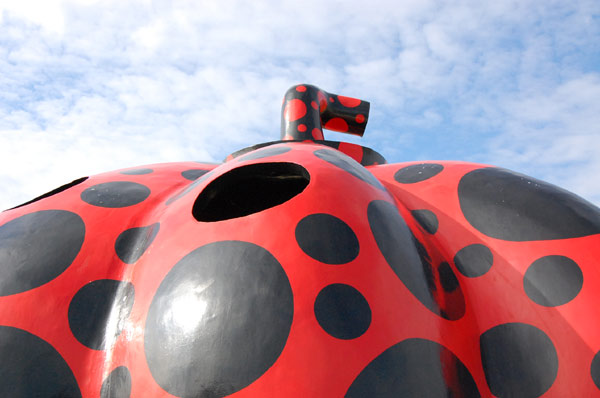
瀬戸内海のさほど大きくはない島に、こんなにもすばらしい現代美術作品が集まっているというのは奇跡のよう。 世界のあちこちで生まれている美術作品がここへ流れ着く 。そんな不思議な海流がこの瀬戸内海、直島の周辺にあるのかしらん？ そんな不思議な海流を作ってくれた故福武哲彦氏、そしてその意志を継いだ福武總一郎氏。 そんな両名に感謝をしつつ。。。[2007TEXT]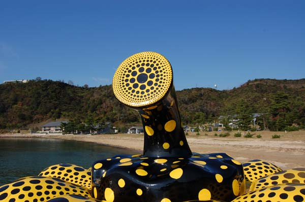
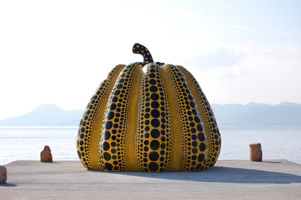
たどりついたのは南瓜。とゆーか、南瓜がたどり着いたとユー感じですが…。 この作品を見ると「名も知れ～ぬ、遠き島よ～り、流れよる椰子のみひとつ～」と歌いたくなります。 ホント、そんな感じなので。 このぼってりした重量感は、洋上で熟して、ここ直島にたどり着いた…とゆーように見えてならない。 奇妙な水玉も、この大きさだからありえる異質なモノとして受け止めることができる。（変なものだから、変な大きさ…というような解釈として） 余談だけど、一度台風で流されたらしい。 海に浮かぶ「南瓜」とゆーのもなかなか趣があるけどねぇ。[2005TEXT]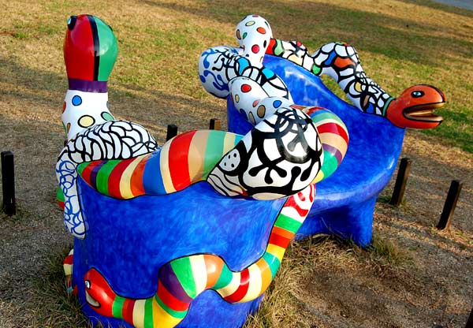
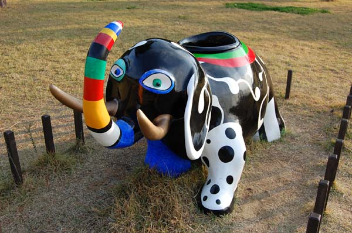
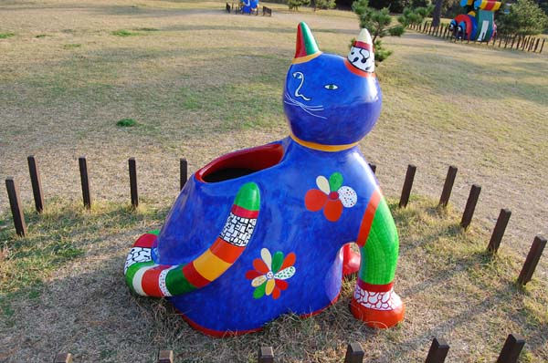
さて、野外作品。ベネッセゾーンに入ってすぐ、パーク棟前にはゆかいな作品が。 本当にたのしい。家に帰って紙粘土こねたくなります。そーゆー無邪気さを触発してくれるカレル・アペルとニキ・ド・サンファールの作品。[2007TEXT]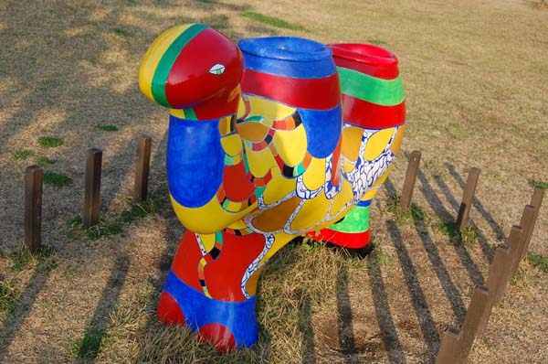
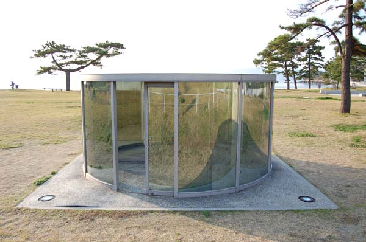
ダングラハム「平面によって二分割された円筒」この場にあることが不可思議に感じる無機質な人工物。夢と現実、すべては表裏一体に繋がっている。けれども自分が見ているものは本当に確かなものなのか？虚像ではないのだろうか？そういったことを問いかけるのがダングラハムの作品。あまり意識をしていなかった作品だったのだけど、3度目にしてその本質をすこし囓ることができたような気がする[2010TEXT]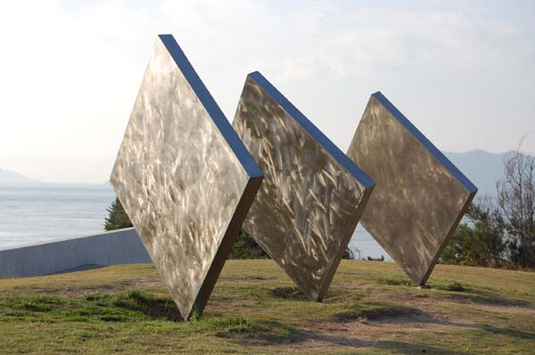
シーサイドギャラリーの上にあるのがゆらゆら風にそよぐ「三枚の正方形」。 かなり大きいものですが、ちょっと押すと簡単に傾きます。こんな華奢なジョイントで大丈夫なのかなーと、今年の大量上陸台風時の光景を思い浮かべたりするのが楽しい。 昼間に日の光を浴びてキラキラ揺れる姿も綺麗ですが、夜にライトアップされた姿も綺麗。 [2005TEXT]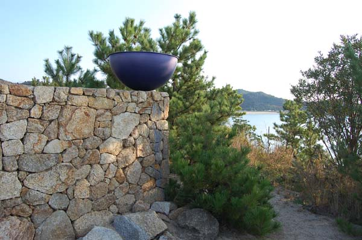
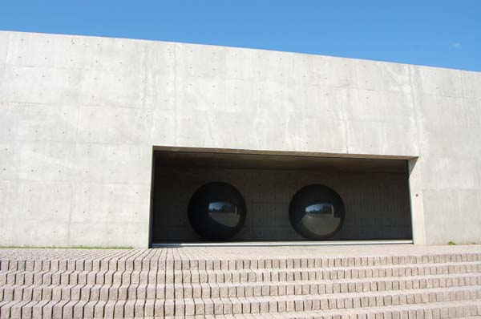
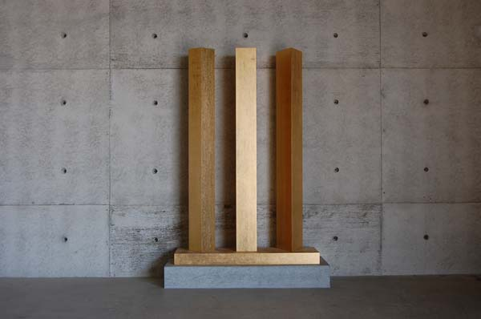
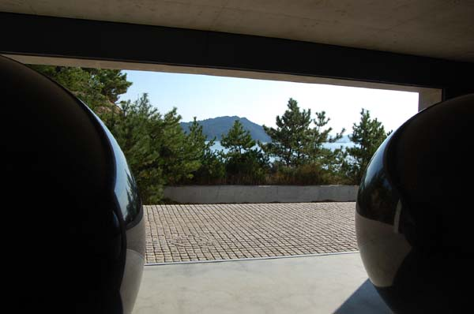
ウォルター・デ・マリアSeen/Unseen Known/Unknown 見えて/見えず/知って/知れず前回、重い扉を開けることができず諦めたこの作品。今回はおじちゃんが開けに来てくれた。中に入ってぐるりと作品を見ることができて満足。建物の中から、外から、そして丸い石に映る中から見る風景はどれも特別な場所に見えてくる。 作品の前の植え込みの前に座って、宿のお湯で入れてきた水筒のコーヒーを飲む。 なんて贅沢な時間なのかしらん？もううっとり。寒い中、暖かいコーヒーを飲みながら、デ・マリアの作品を見られる幸せ。 見ていると、二つの石が私のそばに転がってきて話しかけてきそうな。そんな何かを思う力を感じる二つの石。でもそのくせ、まったくマイペースに遠くの海を見ているような。水平線の先、椰子の木そよぐ南の島や極寒の地の氷塊を見つめているような。 デ・マリアのテーマ「永遠性」を酌んで、100年１000年先を想像する。何が見えるか？ 草ぼうぼうで蔦が絡み、蔦の隙間をトカゲが這う。日は相変わらず優しく、波音も変わらず、そして二つの石も変わらず海を見つめている。[2007text]
さて、シップヤードワークスのある浜から道路方面を望むと、シーサイドギャラリー（もちろん安藤忠雄建築）と呼ばれる大階段がついた建物が。建物のちょうど横っ腹あたりにウォルター・デ・マリアの作品が鎮座してる。 ちなみにベネッセハウスの送迎バスの運転手さんオススメの作品である（フツーのオジサマ風なのだけど、「あそこのデ・マリアは素晴らしいヨー」なんて『今夜のモツ煮は美味しいよー』みたいに言うからちょっとびっくりした） たしかに素晴らしい。 見るということを知っているような、我々がそれを意識していないだけのような、なにかを見つめる（知っている）球体。 作品のタイトルそのままに解釈をしてしまったのだけど、どーなのだろーか？ [2005text]
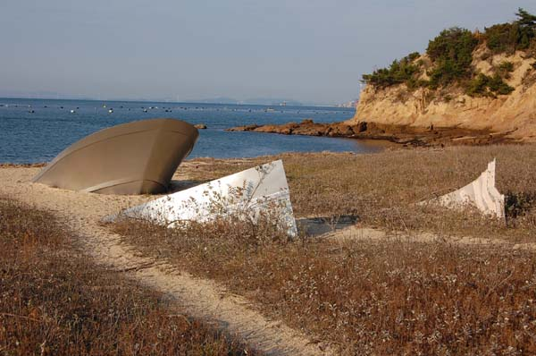
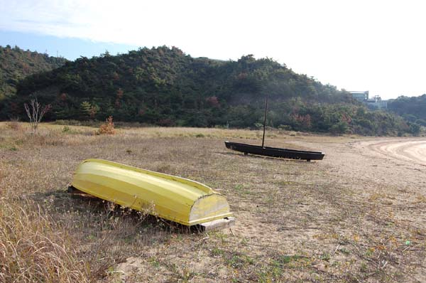
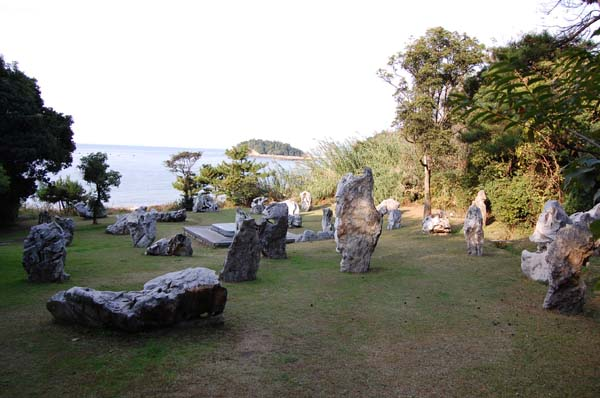
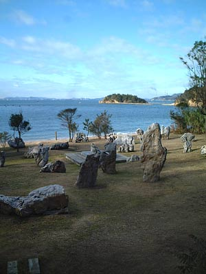
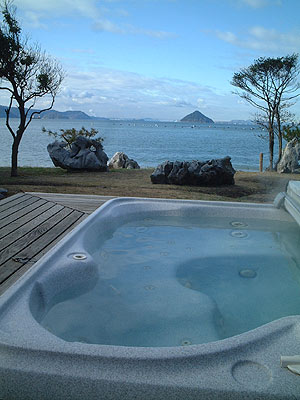
蔡國強「文化大混浴」 今はベネッセハウス宿泊者しか（それも入湯グループ数限定！）入れないとは… 前回入っておいてよかった…。敷居の高いフロになってしまいましたな。でも、昼間に入っているヒトは見なかったなぁ～…やっぱり夜だけ？なのかしらん？ でも混浴の楽しさって、しばらく忘れているなぁ。[2007text]奇石が立ち並ぶ蔡国強の作品。 直島で一番「気」のあつまる場所を選び、さらにこれら奇石の配列により中央にあるジャグジーに「気」を集めているパワーアート（？）。 入り口にある説明書きによると、漢方薬をジャグジーに入れてあるとのことだったが、現在はメンテナンス上、フツーのお湯になってしまっているとのこと。 作品の隅に小さな木の小屋があり、そこで水着に着替えることになるのだけれど、男女別の小屋ではないのでカップル以外の男女グループは要注意。 また、この小屋とジャグジーは20メートルほど離れているので、サンダル等が無い人は準備が必要。（ベネッセハウスで申し込みをすれば、タオル、サンダル、懐中電灯をかしてくれるとのことですが、シーサイドパーク申し込みの場合はサンダルを貸してもらえなかったので） ジャグジーは普段、蓋がしてあるので、それをはずしてから入浴。グループで行く場合は２人で外せば問題ありませんが、一人の場合はギックリ腰に注意しなくてはいけないほど重い蓋です。これまた注意。
さて、入浴ですが…これはとても気持ちよいので、ぜひ体感すべし。 「気」のせいなのか屋外ゆえなのか判りませんが、 一般的な露天風呂とは違う気持ちのよさ。「なーんか奇妙なトコでお風呂入っちゃったなー」とゆーよな。奇石が、人や動物の姿に見えるせいか、なんか雑踏でリラックスをしているような不思議な感じ。 ちなみに私は夜に入ったのだけど、夜の「文化大混浴」は、ますます奇石が人の姿に見える。カップルが寄り添っている姿や、大道芸人のような姿など。ぼんやりライトアップされている奇石は結構見ごたえあります。 昼間の入浴は、海や山がくっきりと見えて、夜の幻想的な雰囲気とは違って開放的な気持ちのよさがあると思うのだけど、昼間は他の人が鑑賞にくる確立がぐっと上がるので、グループの入浴や、スタイル自慢の方にはおすすめ。 一人や、恥ずかしがりやは夜入浴がおすすめです。 昼に、冷やしたシャンパーニュなんかを飲みながら入ったら気持ちいいんだろーなぁ… [2005text]
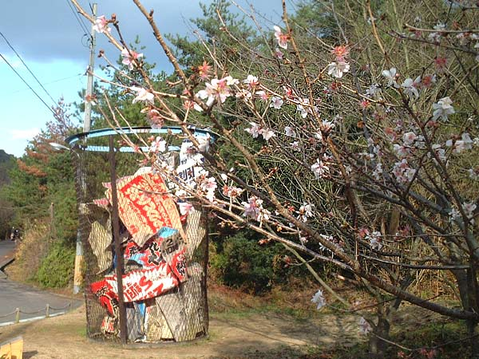
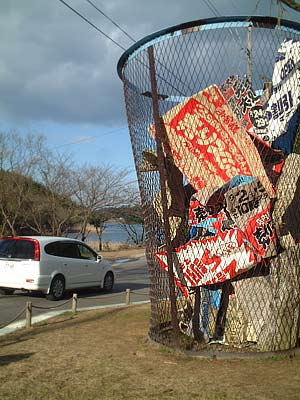
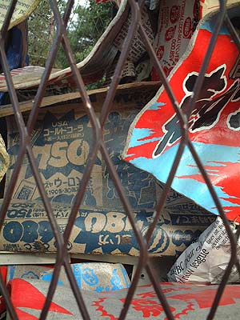
三島喜美代・もうひとつの再生2005-N 前回訪問時にはまだ無かった「三島喜美代・もうひとつの再生2005-N」大きいゴミ箱。 丁度撮影をしているときに、ガイドをしている方が通りかかって、写真をとってもらったり、話を聞いたり… 「この後ろの桜が青い桜なんですか？」（ネット上で青い桜の話が飛び交っていたので…） 「…そりゃウソ。ずっとここの桜の写真とってるけど、青い桜なんて咲かないんだよ。」 「ええええ！！！！！」 このあと、色々と、事情ありそうなお話を聞いたのだけど、まあそういうこともあるということで… 「こっちにね、新しい美術館ができる予定なんだよ」と指差す方向にはまだなーんにもない。 「オレの予想だとSANAAあたりが建てるんじゃないかって思ってるんだけどネ」 直島ですごいなーと思うのが、こーゆーフツーのおじ様が、さらっと現代美術作家や建築家の名前を挙げて、自分の感想を絡めながら説明をしてくれるとこ。 ちゃんと生活と芸術が絡んでいるんだなぁ～…[2007TEXT]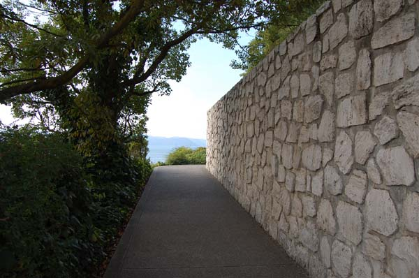